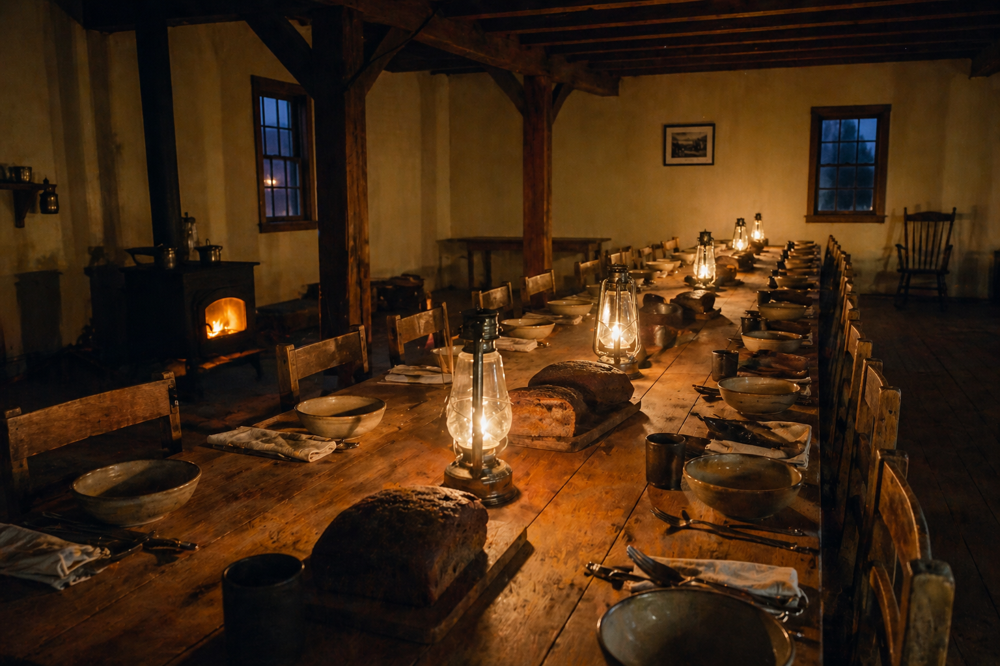
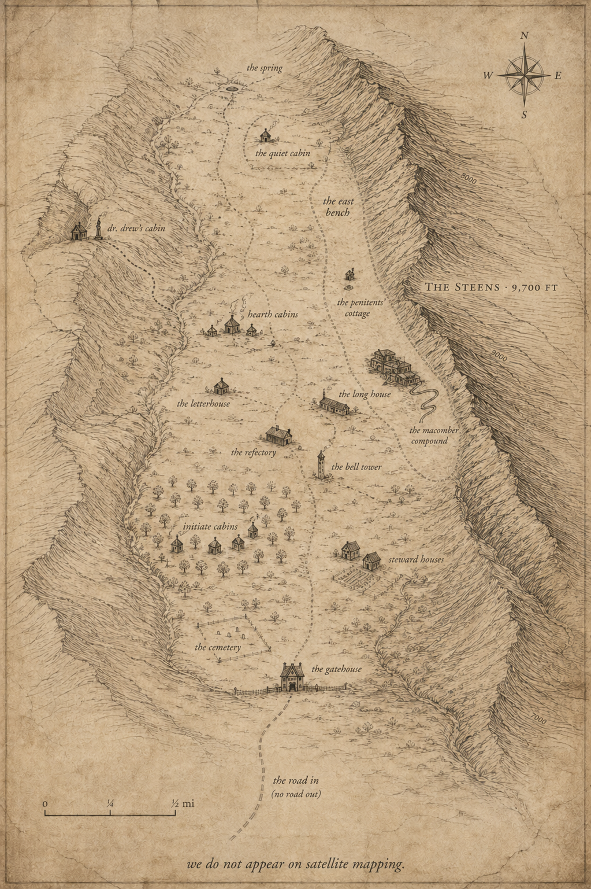
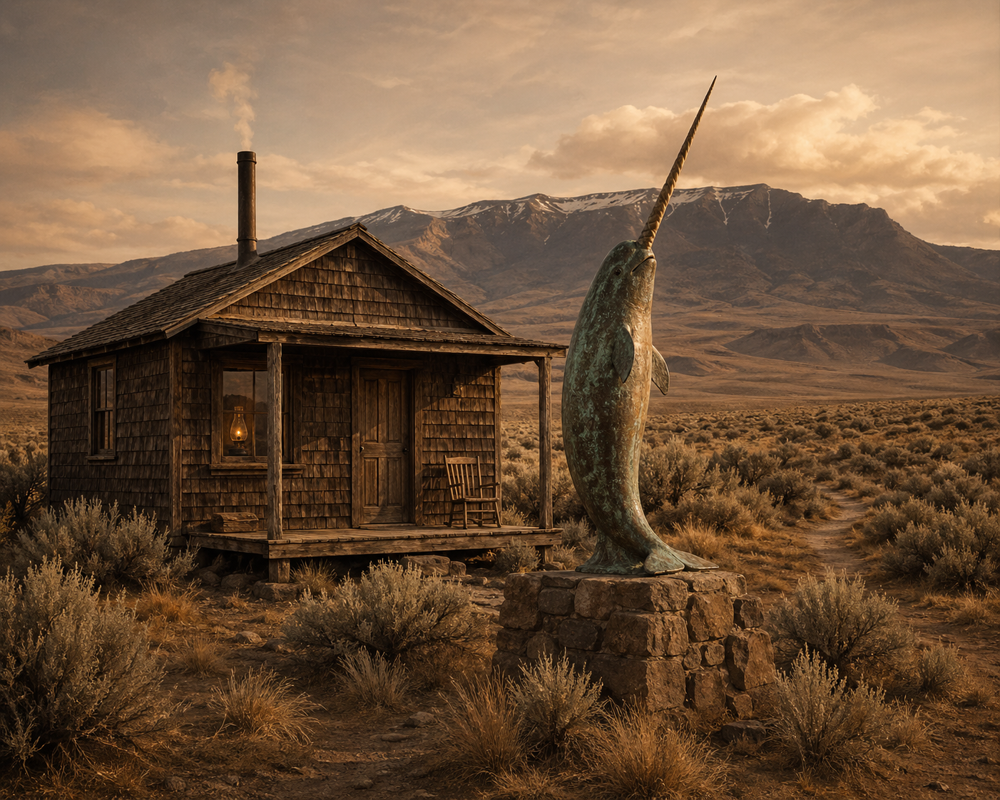
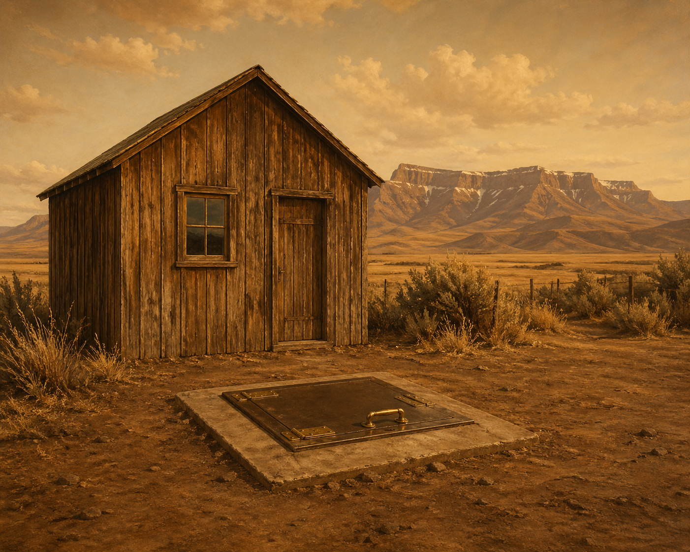
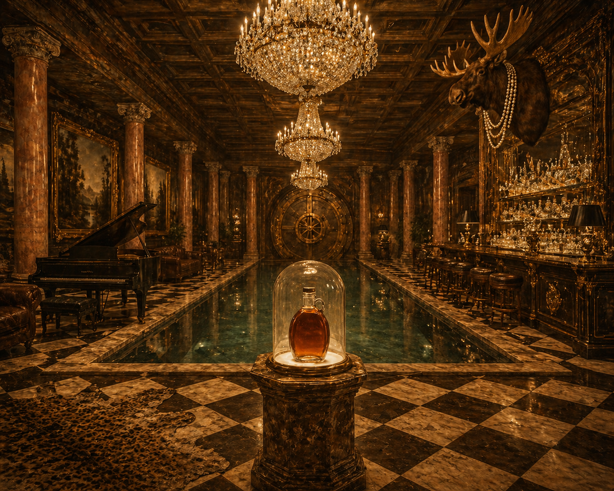
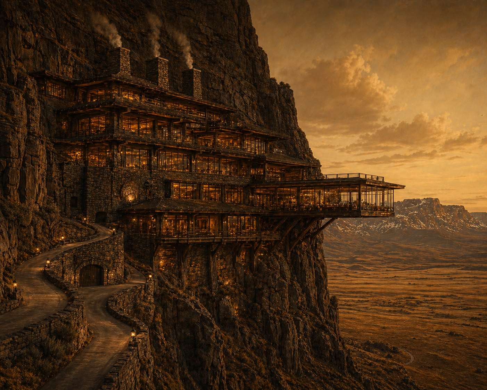
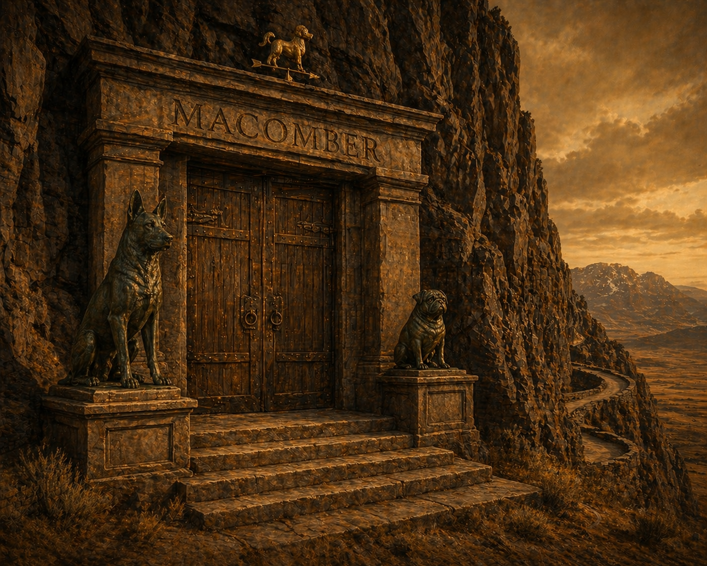

The Gatehouse
Where vehicles, devices, and ID are received.
Stillwater Ranch · Harney County
Four hundred and eighty acres, one spring, three hundred head, and a calendar set by five bells.
Stillwater Ranch sits in a hanging valley on the eastern flank of the Steens, forty-seven miles south of Burns and seventeen miles by gravel road from the nearest paved surface. The valley is two miles long and a mile wide. There is one road in. There is no road out the other side.
The original parcel was deeded to the Vorhees family in 1887 by the Northern Pacific Railroad in settlement of an unrelated matter. Anneke Vorhees Thorne brought it to the Fellowship at our founding. We have added one hundred and sixty acres by adjacent purchase since.


A Tour of the Buildings
The Gatehouse
Where vehicles, devices, and ID are received.
The Letterhouse
Mail in and out. The Office of Correspondence.
The Refectory
Wood-fired Aga, three meals, two in silence.
The Long House
The Council convenes. Audiences are heard.
Hearth Cabins
Visitations. Woodstove and kerosene lamp.
Initiate Cabins
Sabbatical & Fallow. Each named for a tree.
Steward Houses
Permanent residences on the upper terrace.
The Quiet Cabin
Furnished simply. By Council assignment.
The Bell Tower
Five bells, cast 2004 in Aarle-Rixtel.
The Cemetery
Above the Refectory. Eight Stewards rest there.
Dr. Drew's Cabin
The Fellowship's physician. A bronze narwhal keeps the porch.
The Penitents' Cottage
Trevor and Shay, of Fredericton. The lower room is not discussed.
The Macomber Compound
Of Portland, by way of kennels.





A Day at Stillwater
| 5:00 | Rising. The wood is laid. |
| 6:30 | Breakfast in the Refectory, in silence. |
| 12:00 | Midday meal, in silence. |
| 18:00 | Supper. Conversation is permitted. |
| 21:00 | Lamps out. The valley keeps the dark. |
Travel & Arrival
The nearest commercial airport is Boise, four and a half hours by car. Detailed directions to the gatehouse are sent by post following confirmation; we do not publish them here, in keeping with our preference that the curious arrive only by intention. Satellite mapping services do not consistently locate our gate; discard any directions you obtain from them.
Arrival is by appointment, between two and four o'clock on the agreed Sunday. Pilgrims arriving outside this window wait at the gatehouse until the next intake; we keep the bench warm.